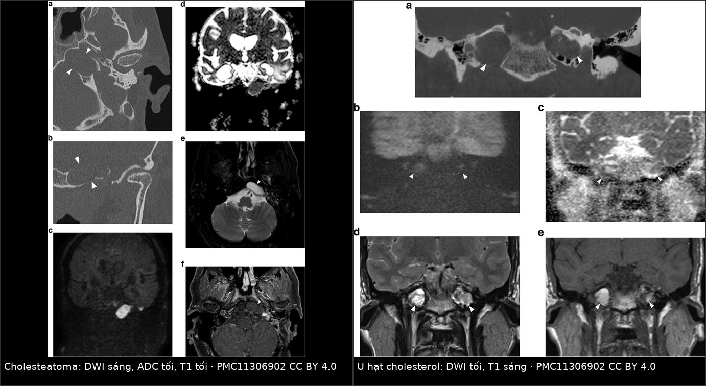
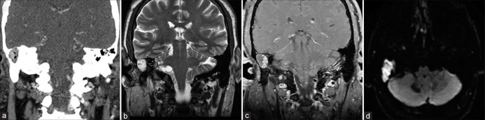
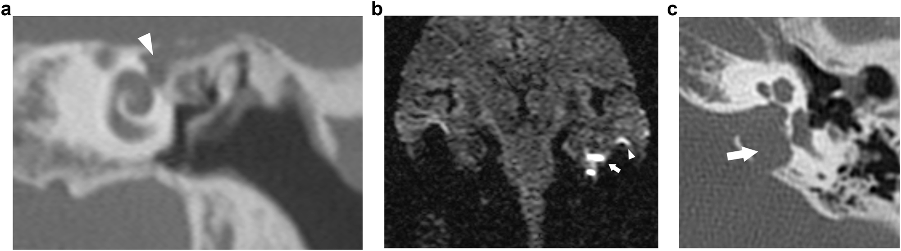

1713 — Cholesteatoma xương đá (petrous bone cholesteatoma) ở trẻ: "liệt mặt Bell" không phải Bell, phân độ Sanna và chỗ đứng của DWI không-EPI
Tags: pattern:cholesteatoma pattern:tieu-xuong pattern:khoi-mo-mem-xuong-da pattern:han-che-khuech-tan pattern:liet-day-vii vung:xuong-da vung:oc-tai vung:ho-so-sau anatomy:oc-tai protocol:HRCT-xuong-thai-duong protocol:MRI-DWI-non-EPI score:Sanna
Mức chắc chắn (certainty): tổng hợp y văn (literature synthesis) — ghép tổng quan hình ảnh cholesteatoma bẩm sinh (Insights Imaging 2024, PMC11306902, CC BY 4.0), 160 ca cholesteatoma xương đá có liệt dây VII được mổ (Head Face Med 2025, PMC12117717), tổng quan hệ thống 8 trẻ / 9 tổn thương đỉnh xương đá (Surg Neurol Int 2022, PMC9699891), khuyến cáo ESR Essentials về hình ảnh cholesteatoma tai giữa (Eur Radiol 2025, PMC11913933), 18 ca đường thượng mê đạo mở rộng (Eur Arch Otorhinolaryngol 2024, PMC11065940) và đo đạc HRCT ngách ốc tai–động mạch cảnh (J Otolaryngol Head Neck Surg 2026, PMC12905107). Không có ca do nhóm tự chụp.
Câu hỏi thực hành: bé gái 9 tuổi, liệt mặt phải độ III House–Brackmann (H-B) tiến triển 3 tuần, nghe kém phải phát hiện khi kiểm tra thính lực học đường, màng nhĩ liền, không chảy mủ, không đau tai. Bác sĩ tuyến trước chẩn đoán "liệt mặt Bell" và cho corticoid 10 ngày, không đỡ. HRCT xương thái dương: khối mô mềm bờ nhẵn, tiêu xương thượng mê đạo phải, kéo tới đỉnh xương đá. Bố mẹ hỏi: "Có phải do lạnh không? Chụp thêm gì nữa? Mổ có mất nghe không?" Bài chốt bốn việc: (1) ở trẻ, liệt mặt ngoại vi KHÔNG có bằng chứng viêm tai cấp/ herpes phải được chụp hình ảnh — cholesteatoma xương đá là nguyên nhân kinh điển nhưng hay bị gọi nhầm là Bell; (2) khối tiêu xương bờ nhẵn + DWI sáng + ADC tối là bộ ba chốt cholesteatoma, còn T1 sáng mới là u hạt cholesterol; (3) phân độ Sanna I–V không phải học thuộc — mỗi lớp quyết định một đường mổ và một mức đánh đổi thính lực; (4) liệt mặt đã kéo dài thì kết quả hồi phục phụ thuộc chủ yếu vào THỜI GIAN, không phải vào tay mổ. Nối 1704 – Viêm tai giữa mạn & cholesteatoma ở trẻ có cấy ốc tai, 236 – Viêm tai xương chũm & biến chứng nội sọ, 497 – Theo dõi sau cấy ốc tai ở trẻ.
1. Tổng quan bệnh học – cơ chế hình ảnh: vì sao keratin lại "sáng DWI mà tối T1"
- Bản chất: cholesteatoma xương đá (petrous bone cholesteatoma — PBC) là nang biểu bì (epidermoid cyst) — túi biểu mô lát vảy sừng hóa nằm phía trong vỏ ốc tai (medial to the otic capsule), bong vảy keratin liên tục vào một khoang kín. Về mô học nó giống hệt cholesteatoma tai giữa; điều khác là vị trí và hệ quả lên dây VII, mê đạo, ống tai trong, động mạch cảnh trong (ICA).
- Nguồn gốc: bẩm sinh (congenital PBC) khi xuất phát từ di tích biểu mô phôi thai (hay gặp quanh hạch gối – geniculate ganglion), hoặc mắc phải do cholesteatoma tai giữa lan vào. PBC bẩm sinh chiếm 12–15% tổng số PBC, tuổi chẩn đoán trung bình 38–46 tuổi ở người lớn — nghĩa là thể bẩm sinh vẫn có thể lặng lẽ tới tuổi trưởng thành, và ở trẻ em thường chỉ lộ ra khi đã có biến chứng.
- Dịch tễ học cần nhớ: PBC chiếm 4–9% mọi tổn thương xương đá; cholesteatoma nói chung ở trẻ 3–6/100.000; lớp I (thượng mê đạo) chiếm khoảng một nửa các ca.
- TẠI SAO DWI sáng – ADC tối: vảy keratin xếp lớp, mất nước, rất nhớt → nước trong tổn thương không khuếch tán tự do. Trên DWI b1000 tổn thương sáng, trên bản đồ ADC tối. Đây là hạn chế khuếch tán thật, không phải "T2 shine-through" — nên bắt buộc xem ADC, và đây là lý do DWI phân biệt được với mô hạt viêm, sẹo, dịch.
- TẠI SAO T1 tối: keratin không có mỡ, không có sản phẩm máu, và ít proton tự do linh động → T1 thấp hơn chất trắng, T2 trung bình–cao. Ngược lại, u hạt cholesterol (cholesterol granuloma) có T1 sáng vì xuất huyết vi thể lặp lại trong một tế bào khí bị tắc → methemoglobin (sắt hóa trị 3, thuận từ) rút ngắn T1. Đây là cặp phân biệt quan trọng nhất của đỉnh xương đá, và là cạm bẫy số 1 khi chỉ đọc DWI.
- TẠI SAO tiêu xương bờ nhẵn: tổn thương lớn chậm gây áp lực + hoạt hóa hủy cốt bào (RANKL, IL-1, TNF-α) → xương tiêu theo bờ cong mềm, có viền xơ mảnh. Đây là vùng chuyển tiếp hẹp kiểu lành tính; không có phản ứng màng xương, không có thành phần mô mềm xâm lấn ngoài xương.
- Ngưỡng định lượng bắt buộc nhớ:
- ADC của cholesteatoma: ngưỡng công bố thay đổi theo kỹ thuật, dải 759–1.370 × 10⁻⁶ mm²/s → không dùng một con số tuyệt đối, phải so với mô não cùng lát và với bên đối diện (PMC11913933).
- DWI không-EPI phát hiện được tổn thương 2–3 mm; giá trị tiên đoán dương/âm ≥ 89,8% và 80,5% trong theo dõi tồn dư (PMC11913933).
- Tiêu xương thấy trên CT ở 50–97% ca cholesteatoma; tiêu xương con 82%, hay nhất là xương đe (incus) (PMC11913933).
- Tổng quan 8 trẻ / 9 tổn thương đỉnh xương đá: nghe kém dẫn truyền 77%, thủng màng nhĩ 86%, tái phát 50% với thời gian tái phát trung bình 3,5 năm (SD 1,73), theo dõi 32,6 tháng (SD 21,7), canal-wall up 60%, 0 biến chứng phẫu thuật, 5/7 trẻ (71%) có thủng nhĩ cải thiện thính lực (PMC9699891). Cỡ mẫu rất nhỏ — đọc như tín hiệu, không phải tỷ lệ chuẩn.
- Loạt 160 ca PBC có liệt mặt (trung bình 34,1 ± 13,5 tuổi, dao động 5,58–77): thượng mê đạo 80 ca (50,0%), toàn bộ ốc tai 53 (33,1%), đỉnh 15 (9,4%), hạ mê đạo–đỉnh 12 (7,5%); đường mổ hay dùng trên hố sọ giữa 70 (43,8%), xuyên ốc tai 27 (16,9%), xuyên mê đạo 26 (16,3%) (PMC12117717).
2. Mẫu hình + chẩn đoán phân biệt theo vị trí (gamut)
- Mẫu hình cốt lõi: khối mô mềm bờ nhẵn, tiêu xương "khoét" ở xương đá, không có vôi hóa trong khối, không có phản ứng xương; DWI b1000 sáng, ADC tối, T1 tối, T2 trung bình–cao; không ngấm thuốc hoặc chỉ ngấm viền.
- Theo lớp giải phẫu (phân độ Sanna 1993 — vị trí quyết định đường mổ):
- Lớp I — thượng mê đạo (supralabyrinthine): trên mê đạo xương, hay ôm hạch gối/đoạn nhĩ dây VII, lan ra trần nhĩ. Hay nhất (~50%), và hay gây liệt mặt nhất vì dây VII nằm ngay trong ổ bệnh.
- Lớp II — hạ mê đạo (infralabyrinthine): dưới mê đạo, lan tới ICA phía trước, hố sọ sau phía sau, ống tai trong–clivus phía trong, bóng cảnh–dây thần kinh sọ thấp phía dưới.
- Lớp III — hạ mê đạo–đỉnh (infralabyrinthine-apical): lớp II vượt qua ICA ra trước vào đỉnh xương đá.
- Lớp IV — toàn bộ (massive): toàn bộ vỏ ốc tai, kết hợp trên + dưới mê đạo; gần như luôn mất thính lực bên bệnh.
- Lớp V — đỉnh (apical): khu trú ở đỉnh xương đá, thường coi là bẩm sinh; không đụng mê đạo → về lý thuyết giữ được nghe, nhưng đường vào rất hẹp (xem mục 4).
- Theo triệu chứng khởi phát (gamut "trẻ đến từ phòng khám nào"):
- Nghe kém dẫn truyền + màng nhĩ liền → nghĩ thể bẩm sinh lớp I/II/V (khác cholesteatoma tai giữa vì không có túi co lõm).
- Liệt mặt ngoại vi tiến triển → lớp I hay gặp nhất; chẩn đoán phân biệt bắt buộc với Bell, Ramsay–Hunt, u dây VII, viêm tai giữa biến chứng.
- Chóng mặt + rò mê đạo → tổn thương đã ăn vào ốc tai/mê đạo (lớp II–IV).
- Đau sau mắt + liệt dây VI + viêm tai → hội chứng Gradenigo (viêm đỉnh xương đá — petrous apicitis): không phải cholesteatoma, nhưng là hàng phân biệt cấp cứu ở trẻ.
- Tình cờ trên MRI sọ → lớp V, phải phân biệt với dịch kẹt (trapped fluid) và u hạt cholesterol trước khi nói tới mổ.
- Gợi nhớ 5 lớp theo câu "Sống trên–dưới–vượt–nuốt–đỉnh": Supralabyrinthine → Infralabyrinthine → Infralabyrinthine-apical → Massive → Apical = S-I-I-M-A; mẹo nhớ "trên, dưới, dưới-xa, cả ốc tai, chỉ đỉnh".
3. Bảng so sánh phân biệt (ma trận đối chiếu)
| Thực thể (entity) | Hình ảnh điển hình (HRCT + MRI) | Chốt vào (rule-in) | Chốt loại (rule-out) | Gợi ý xác nhận |
|---|---|---|---|---|
| Cholesteatoma xương đá (PBC) | Khối mô mềm bờ nhẵn tiêu xương, DWI b1000 sáng, ADC tối, T1 tối, T2 trung bình–cao, không ngấm thuốc | ADC tối + T1 tối + tiêu xương bờ nhẵn | T1 sáng mạnh → không phải cholesteatoma (nghĩ u hạt cholesterol) | DWI không-EPI + ADC + HRCT; mô bệnh khi mổ |
| U hạt cholesterol (cholesterol granuloma) | T1 TĂNG sáng cả khi không tiêm, T2 rất sáng, DWI tối/ADC cao, khối bờ nhẵn, đối xứng hai bên hay gặp | T1 sáng + DWI tối + ADC cao | T1 tối + DWI sáng → cholesteatoma | MRI T1 không tiêm + T2; theo dõi nếu không triệu chứng |
| Dịch kẹt đỉnh xương đá (trapped fluid / petrous apex effusion) | T1 tối, T2 rất sáng, không hạn chế khuếch tán, không tiêu xương, không làm rộng đỉnh; thường kèm viêm tai giữa cùng bên | T2 sáng + DWI tối + không tiêu xương | Có tiêu xương + DWI sáng → bệnh tổ chức | Điều trị tai giữa rồi MRI lại 3–6 tháng |
| Sụn thịt (chondrosarcoma) xương đá | T2 rất sáng, chia múi (lobulated), vôi hóa "vòng cung" 50%, ngấm thuốc dạng vòng–cung | Vôi hóa + ngấm thuốc + bờ không đều | Không vôi hóa, không ngấm, DWI sáng đậm → cholesteatoma | CT xương + MRI có cản từ; sinh thiết |
| U dây thần kinh (schwannoma) ống tai trong | Làm rộng ống tai trong, ngấm thuốc đồng nhất, T1 đồng tín hiệu, T2 sáng | Ngấm thuốc đậm + rộng ống tai trong | Không ngấm thuốc → không phải schwannoma | MRI T1 sau tiêm |
| Viêm đỉnh xương đá (petrous apicitis / Gradenigo) | Ngấm thuốc màng não–xương, có thể ổ áp-xe hạn chế khuếch tán, kèm viêm tai giữa/xoang, liệt dây VI | Sốt + đau sau mắt + liệt VI + ngấm thuốc | Khối bờ nhẵn mạn tính không viêm → u/nang | MRI có cản từ + kháng sinh; dẫn lưu nếu áp-xe |

Trái — cholesteatoma lớp V: (a, b) HRCT khối tiêu xương bờ nhẵn ở đỉnh xương đá; (c) DWI b1000 sáng; (d) ADC tối (hạn chế khuếch tán thật); (e) T2 sáng; (f) T1 sau tiêm không ngấm. Phải — u hạt cholesterol hai bên: (a) tiêu xương bờ nhẵn đối xứng; (b) DWI tối; (c) ADC cao; (d) T2 rất sáng; (e) T1 không tiêm đã sáng (methemoglobin). Cùng một "khối đỉnh xương đá", hai bản chất hoàn toàn khác — và chỉ cặp DWI + T1 mới tách được. Nguồn: Insights Imaging 2024 (PMC11306902), CC BY 4.0; ảnh ghép bằngtools/make_composite.py, giữ nguyên tỷ lệ.
Ba câu hỏi đọc ảnh theo thứ tự (không đảo):
- Có tiêu xương không? (HRCT) — không tiêu xương thì gần như loại cholesteatoma, nghĩ dịch kẹt.
- DWI b1000 có sáng và ADC có tối không? — có → cholesteatoma; không → đi tiếp.
- T1 không tiêm có sáng không? — sáng → u hạt cholesterol (hoặc máu/mỡ); tối → dịch/nang khác.
4. Protocol chụp + phân độ Sanna + ngưỡng xử trí dây VII
HRCT xương thái dương (bắt buộc, là "bản đồ phẫu thuật"):
- Collimation 0,5–0,75 mm, tái tạo lát 0,3 mm, kernel xương, cửa sổ xương rộng; axial + coronal (coronal để đọc trần nhĩ, scutum, ốc tai, ống Fallope). CBCT cho độ phân giải 0,15–0,5 mm với liều thấp hơn nhưng dễ nhiễu do cử động — cân nhắc ở trẻ nhỏ (PMC11913933).
- Sáu điều phải ghi trong báo cáo: (1) lớp Sanna; (2) quan hệ với ốc tai – tiền đình – ống bán khuyên; (3) ống Fallope: đoạn nào mất vỏ, hạch gối có bị ôm; (4) ICA đoạn ngang/dọc và lỗ cảnh (bóng cảnh cao); (5) ống tai trong – bao dây VII/VIII; (6) trần nhĩ/trần xương đá (nguy cơ rò dịch não tủy).
MRI (bắt buộc để chốt bản chất, không thay HRCT):
- DWI không-EPI (non-EPI DWI: HASTE / PROPELLER / BLADE), lát 2–3 mm, b0 (hoặc b50) + b1000, cộng bản đồ ADC tính toán; T1 không tiêm, T2 3D CISS/SPACE để định vị giải phẫu; T1 sau tiêm chỉ khi nghi u/viêm.
- ADC định lượng: đặt ROI trong phần đặc nhất của tổn thương, so với chất trắng cùng lát và bên đối diện; dải ngưỡng công bố 759–1.370 × 10⁻⁶ mm²/s nên không dùng số tuyệt đối (PMC11913933).
- Ghép ảnh (fusion) DWI + T2 3D giúp định vị tổn thương quanh ốc tai/ống Fallope — đúng chỗ dao mổ đi qua.
Phân độ Sanna 1993 (5 lớp) → đường mổ và đánh đổi thính lực:
| Lớp | Vị trí | Đường mổ hay dùng | Thính lực |
|---|---|---|---|
| I — thượng mê đạo | Trên mê đạo xương, quanh hạch gối | Trên hố sọ giữa (middle fossa) hoặc thượng mê đạo mở rộng qua xương chũm | Có thể giữ nghe nếu ốc tai còn nguyên |
| II — hạ mê đạo | Dưới mê đạo, tới ICA/bóng cảnh | Xuyên xương chũm – dưới ốc tai (infracochlear) hoặc xuyên mê đạo | Thường mất nghe nếu đi xuyên mê đạo |
| III — hạ mê đạo–đỉnh | Vượt ICA vào đỉnh | Xuyên ốc tai (transcochlear) / xuyên mê đạo | Mất nghe có kế hoạch |
| IV — toàn bộ | Toàn bộ vỏ ốc tai | Xuyên ốc tai + bịt ống tai (blind sac) | Mất nghe chắc chắn |
| V — đỉnh | Khu trú đỉnh xương đá | Xuyên mê đạo cải tiến (mở ngách ốc tai–ĐM cảnh), nội soi qua bướm/xuyên clivus | Có thể giữ nghe nếu ngách đủ rộng |
- Ngách ốc tai–động mạch cảnh (cochlear–carotid recess): tam giác trước–trên ốc tai (TASC) tiếp cận được qua nội soi tai 3 mm ở 80% trường hợp; tam giác trước–dưới (TAIC) chỉ 62,5% → đo trước mổ trên HRCT để biết có giữ được ốc tai hay không (PMC12905107).
Ngưỡng xử trí dây VII (dữ liệu 160 ca PBC có liệt mặt — PMC12117717):
| Tình huống | Can thiệp | Kết quả |
|---|---|---|
| H-B III–IV, liệt < 12 tháng | Giải ép (decompression) | H-B I–II: 100% (22/22) |
| H-B V–VI, liệt < 2 tháng | Giải ép | H-B I–II: 88,9% (8/9) |
| Đứt/không còn dẫn truyền, < 12 tháng | Nối tận–tận / chuyển đường (rerouting) | H-B III: 77,8% (14/18) |
| Mất đoạn < 12 tháng | Ghép dây tai lớn (great auricular nerve) | H-B III: 75% |
| Liệt hoàn toàn kéo dài, không nối được | Nối dây hạ thiệt–mặt (hypoglossal–facial) | H-B IV: 58,3% (7/12) |
| Bất kỳ | — | Chức năng trước mổ kém và thời gian liệt dài = yếu tố tiên lượng xấu độc lập |
- Suy luận thực hành từ bảng trên: thứ quyết định kết quả là thời gian liệt, không phải kỹ thuật — nên "theo dõi Bell 3–6 tháng" ở trẻ có khối xương đá là sai lầm, vì cửa sổ < 12 tháng (tốt nhất < 2 tháng với liệt nặng) trôi qua trong lúc chờ.
Theo dõi sau mổ: MRI DWI không-EPI + nội soi tai là trụ cột; CT rất kém trong phát hiện tồn dư vì mô mềm hậu phẫu (dịch, sẹo, mỡ vá) không phân biệt được với cholesteatoma. Thời điểm phát hiện tồn dư/tái phát trung bình khoảng 3 năm ở cholesteatoma mắc phải → chụp 6–12 tháng, sau đó hằng năm tới 3–5 năm; trẻ có bệnh lan rộng vẫn có thể phải mổ nhìn lại (second look) dù MRI âm tính (PMC11913933, PMC11306902).
flowchart TD
A[Tre liet mat ngoai vi hoac nghe kem mot ben] --> B[HRCT xuong thai duong 0.6 mm axial + coronal]
B --> C{Khoi mo mem tieu xuong xuong da?}
C -->|Khong| D[Tim nguyen nhan khac: viem tai, Gradenigo, u day VII]
C -->|Co| E[MRI: DWI non-EPI b1000 + ADC + T1 khong tiem + T2 3D]
E --> F{DWI sang va ADC toi?}
F -->|Co| G[Cholesteatoma xuong da]
F -->|Khong| H{T1 khong tiem sang?}
H -->|Co| I[U hat cholesterol hoac mau/mo]
H -->|Khong| J[Dich ket dinh xuong da hoac nang khac]
G --> K{Phan do Sanna}
K -->|Lop I thuong me dao| L[Duong tren ho so giua hoac thuong me dao mo rong]
K -->|Lop II ha me dao| M[Xuyen xuong chum duoi oc tai hoac xuyen me dao]
K -->|Lop III ha me dao - dinh| N[Xuyen oc tai]
K -->|Lop IV toan bo oc tai| O[Xuyen oc tai + bit ong tai]
K -->|Lop V dinh xuong da| P[Do ngach oc tai - DM canh tren HRCT]
P --> Q{Ngach du rong?}
Q -->|Co| R[Xuyen me dao cai tien: giu oc tai]
Q -->|Khong| S[Xuyen me dao hoac noi soi xuyen buom]
5. Biến thể bình thường và cạm bẫy
- Cạm bẫy 1 — "Bell ở trẻ": liệt mặt ngoại vi ở trẻ hiếm khi vô căn so với người lớn và luôn phải loại bệnh tai – xương đá. Quy tắc an toàn: liệt mặt + nghe kém cùng bên + màng nhĩ liền → HRCT xương thái dương, không chờ.
- Cạm bẫy 2 — chỉ đọc DWI, không đọc T1: u hạt cholesterol, mỡ vá, sáp tai (cerumen), silastic, mô hạt, mủ đều có thể sáng trên DWI không-EPI → dương tính giả. Bộ ba bắt buộc: DWI + T1 không tiêm + T2 3D; T1 sáng là dấu hiệu loại cholesteatoma mạnh nhất (PMC11913933).
- Cạm bẫy 3 — "đỉnh xương đá bất đối xứng" trên MRI: tủy xương đỉnh còn mỡ bên này và đặc (marrow) bên kia là biến thể bình thường, T1 sáng, không tiêu xương, không hạn chế khuếch tán — đừng gọi là tổn thương. Đối chiếu HRCT: không tiêu xương = không bệnh tổ chức.
- Cạm bẫy 4 — dịch kẹt sau viêm tai: T2 rất sáng, T1 tối, DWI tối, không tiêu xương; đa số tự hết khi tai giữa thông thoáng. Chỉ MRI lại sau 3–6 tháng nếu còn triệu chứng; đừng mổ đỉnh xương đá vì "khối tăng T2".
- Cạm bẫy 5 — mỡ vá sau mổ giống tồn dư: mỡ bụng T1 sáng, T2 sáng, không hạn chế khuếch tán; cholesteatoma tồn dư T1 tối, DWI sáng. Vì thế đọc MRI sau mổ phải có T1 không tiêm, và so với MRI nền ngay sau mổ.
- Cạm bẫy 6 — mất nghe "không giải thích được" sau mổ lớp I: nguyên nhân hay gặp là làm tổn thương ốc tai khi khoan quanh bao ốc tai hoặc rò mê đạo không nhận ra; trên hình hậu phẫu thấy mất tín hiệu dịch mê đạo trên T2 3D/CISS — dấu hiệu mất dịch nội dịch, không phải tồn dư.
- Biến thể bình thường dễ nhầm: đỉnh xương đá khí hóa một bên (không đối xứng) · bóng cảnh cao (đổi đường mổ, không phải bệnh) · xoang sigma trước · ống tai trong hẹp bẩm sinh · màng nhĩ dày do sẹo ở trẻ đã từng đặt ống thông khí.
6. Tự lượng giá — Blind Quiz
Ca 1 — Nam 17 tuổi, chảy mủ tai phải sau chấn thương, nghe kém tiến triển:

- Gợi ý: khối 2 cm vùng ống tai ngoài đoạn trong/đỉnh xương đá; không có tiền sử viêm tai mạn rõ.
- Câu hỏi: (1) Khối nằm ở đâu và có tiêu xương không? (2) Ảnh (d) là chuỗi xung gì, và tín hiệu đó nói gì? (3) Nếu đây là trẻ chưa có liệt mặt, có được theo dõi không?
Bấm để hiện đáp án (findings + chẩn đoán)
- Vị trí/tiêu xương: khối mô mềm bờ nhẵn ở phần trong ống tai ngoài, lan vào xương đá, tiêu xương kiểu khoét — vùng chuyển tiếp hẹp, không phản ứng màng xương.
- (d) là DWI b1000: sáng đậm, tương ứng hạn chế khuếch tán của keratin → cholesteatoma (không phải dịch, không phải mô hạt).
- Có theo dõi được không: tổn thương đã tiêu xương và có triệu chứng (chảy mủ, nghe kém) → không theo dõi đơn thuần; mổ lấy bệnh là điều trị chuẩn. Theo dõi chỉ dành cho khối nhỏ, không triệu chứng, không tiêu xương tiến triển ở người lớn.
- Phản biện nguồn: đây là ca trong tổng quan hệ thống (n = 8 trẻ), tác giả ghi nhận khởi phát sau chấn thương — không điển hình cho cholesteatoma bẩm sinh (thường không có tiền sử chấn thương); nhiều khả năng bệnh có sẵn, chấn thương chỉ làm lộ triệu chứng. Không sửa nguồn, chỉ ghi chú.
- Nguồn ảnh: Surg Neurol Int 2022 (PMC9699891), CC BY-NC-SA 4.0 — nguyên bản, không chỉnh sửa.
Ca 2 — Nữ 55 tuổi, liệt mặt trái đột ngột, điếc trái lâu năm:

- Gợi ý: màng nhĩ liền; không đau, không chảy mủ; liệt mặt ngoại vi hoàn toàn.
- Câu hỏi: (1) Tổn thương lớp Sanna nào? (2) Vì sao liệt mặt lại là triệu chứng hay gặp của lớp này? (3) Đường mổ nào cho phép giữ nghe, và điều kiện để chọn đường đó là gì?
Bấm để hiện đáp án
- (a) Coronal CT: khối mô mềm ngay trên mê đạo xương, bờ nhẵn, không phá ốc tai → lớp I — thượng mê đạo (supralabyrinthine).
- (b) DWI b1000: sáng ở cùng vị trí → hạn chế khuếch tán = cholesteatoma. (c) Axial CT: khối ôm mặt trước ống Fallope/hạch gối.
- Vì sao liệt mặt: lớp I nằm sát hạch gối và đoạn nhĩ dây VII — dây VII là cấu trúc giải phẫu bị vây quanh đầu tiên, nên liệt mặt là dấu hiệu đặc trưng của lớp này (và hay bị chẩn đoán nhầm là Bell).
- Đường mổ giữ nghe: trên hố sọ giữa hoặc thượng mê đạo mở rộng qua xương chũm — điều kiện: ốc tai và mê đạo còn nguyên trên HRCT, còn nghe hữu ích bên bệnh, và dây VII còn dẫn truyền (nếu phải chuyển đường dây VII thì cân nhắc lại).
- Nguồn ảnh: Insights Imaging 2024 (PMC11306902), CC BY 4.0.
Ca 3 — Nam 34 tuổi, chụp MRI sọ vì đau đầu, phát hiện tổn thương đỉnh xương đá HAI BÊN:
- Gợi ý: không liệt mặt, không nghe kém mới, tổn thương đối xứng hai bên, bờ nhẵn.
- Câu hỏi: (1) Bên phải ảnh ghép — DWI và T1 nói gì? (2) Vì sao T1 sáng mà không cần tiêm thuốc? (3) Có mổ không?
Bấm để hiện đáp án
- DWI tối, ADC cao (không hạn chế khuếch tán) và T1 không tiêm đã sáng → u hạt cholesterol (cholesterol granuloma), không phải cholesteatoma.
- Vì sao T1 sáng: xuất huyết vi thể lặp lại trong tế bào khí bị tắc → methemoglobin (sắt hóa trị 3, thuận từ) rút ngắn thời gian T1 → tăng tín hiệu nội tại, không liên quan cản từ.
- Có mổ không: tổn thương hai bên, không triệu chứng, không tiêu xương tiến triển → theo dõi MRI; can thiệp (dẫn lưu/mở thông) chỉ khi đau đầu không kiểm soát, liệt mặt, chóng mặt, hoặc chèn ép.
- Bài học: "khối đỉnh xương đá hai bên" gần như luôn là u hạt cholesterol hoặc dịch kẹt, không phải cholesteatoma — và T1 là chìa khóa, DWI chỉ là cửa phụ.
- Nguồn ảnh: Insights Imaging 2024 (PMC11306902), CC BY 4.0; ảnh ghép giữ nguyên tỷ lệ, có dải attribution.
Bài liên quan chéo
- 1704 – Viêm tai giữa mạn & cholesteatoma ở trẻ có cấy ốc tai (chọn CWU/CWD/STP, cholesteatoma xương đá là chỉ định STP + CI)
- 236 – Viêm tai xương chũm & biến chứng nội sọ (đường lan nội sọ, áp-xe Bezold, huyết khối xoang sigma)
- 497 – Theo dõi sau cấy ốc tai ở trẻ (viêm màng não sau cấy 0,74%; DWI mất giá trị khi có nam châm)
- 720 – Cholesteatoma xương thái dương (nền tảng cholesteatoma tai giữa/sào bào)
Ảnh
1713_cholesteatoma-xuong-da_CT-MRI_PMC9699891-Fig2.jpg— ca trẻ 17 tuổi, 4 ô (CT coronal, T2, T1 sau tiêm, DWI).1713_cholesteatoma-xuong-da_CT-MRI_PMC11306902-Fig2.png— lớp I thượng mê đạo, 3 ô (CT coronal, DWI, CT axial).1713_cholesteatoma-xuong-da_CT-MRI_PMC11306902-Fig10.pngvà1713_cholesteatoma-xuong-da_MRI_PMC11306902-Fig11.png— nguyên bản dùng để ghép composite (giữ trong thư mục để truy nguyên).composite_cholesteatoma-vs-cholesterol-granuloma.jpg— ghép bằngtools/make_composite.py, không crop, không kéo giãn, nền đen + dải attribution.- Nguồn + giấy phép từng ảnh:
images/CREDITS.md. Không ghi tên tác giả (chưa đối chiếu chắc chắn với PMID/PMCID) — attribution dùng tạp chí + năm + PMCID.
Không dùng để chẩn đoán độc lập khi chưa có người hướng dẫn.